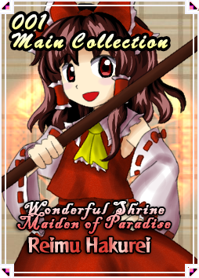

Character: Reimu Hakurei
Character Info
Profile
The shrine maiden of the Hakurei Shrine.
She is a human who protects the border that divides absurdity and reality.
She possesses an ability to fly in the air and exorcise evil spirits.
Whenever a disturbance occurs, she immediately rushes to resolve it, although most of the time she feels that it is a nuisance.
However, she never manages to get rid of all the disturbances around her.
Rather, it could be the case that she attracts disturbances to herself.
My Opinion of the Character
Negative
| What is it that I don't like about Reimu in the first place? | |
|---|---|

|
Reimu, despite being the protagonist, is very easy to play with, apart from that I don't like her very much, she doesn't have much mystery, it's basically "a problem arises, she comes and solves it." |
Positive
| What do I like about Reimu in the first place? | |
|---|---|

|
Although I think badly of Reimu, she is very well trained for fighting at long distances, and maybe she left her voice for fun. |
Differences between "Touhou 12.3" and "Touhou 7.5"
- The card system is different, apart from the fact that there are some Soku/UNL and IaMP cards but most of them are original, apart from others that are very broken.
- Normal movements are not the same/identical to either Soku or IaMP in terms of frame data or speed.